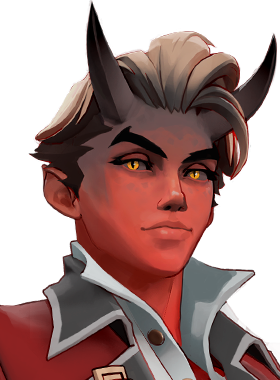

Apollo
Assassino de mobilidade, bom em encerrar lutas rápido.

Assassino de mobilidade, bom em encerrar lutas rápido.
1.929.993 partidas analisadas · atualizado em 16/10/2026 as 21:22 · fonte: deadlock-api.com
Cria um sigilo que explode à frente de Apollo, ferindo e retardando inimigos, enquanto ele salta para trás.
Prepara-se para aparar o próximo ataque; ao aparar, fica invulnerável por pouco tempo e avança sobre um herói inimigo, atordoando-o e reduzindo sua resistência a corpo a corpo.
Faz uma sequência de estocadas perfurantes; segurar a tecla aumenta o dano, e soltar na janela perfeita causa o dano máximo.
Canaliza um corte de longo alcance que retarda os atingidos, impede suas ações e os cura; quando acaba, eles sofrem dano pesado, maior em inimigos com metade da vida.
4.578 partidas registradas com esta build.
🏆 Explosão Mística (800) · 🏆 Expansão Mística (800) · 🏆 Regeneração Mística (800) · 🏆 Regeneração Radiante (3.200) · 🏆 Healbane (1.600) · 🏆 Dissipar Magia (3.200) · 🏆 Pedra de Urdidura (3.200) · 🏆 Regeneração Extra (800) · 🏆 Emblema do Encantador (1.600) · 🏆 Pulso de Tormento (3.200)
3.442 partidas registradas com esta build.
Explosão Mística (800) · Regeneração Extra (800) · Espírito Extra (800) · Expansão Mística (800) · Espírito Melhorado (1.600) · Frente Fria (1.600) · Golpe Espiritual (800) · Impulsionador de cura (1.600) · Healbane (1.600) · Arrebatamento de Espírito (3.200)
3.003 partidas registradas com esta build.
Espírito Extra (800) · Roubo de vida corpo a corpo (800) · Explosão Mística (800) · Expansão Mística (800) · Golpe Espiritual (800) · Arrebatamento de Espírito (3.200) · Espírito Melhorado (1.600) · Impulsionador de cura (1.600) · Carga Corpo a Corpo (1.600) · Golpe de vida (3.200)
08/02: 46.0% → 08/03: 50.1% → 05/04: 50.4% → 03/05: 50.2% → 31/05: 48.0% → 28/06: 49.0% → 26/07: 50.0% → 23/08: 50.0% → 20/09: 50.7%